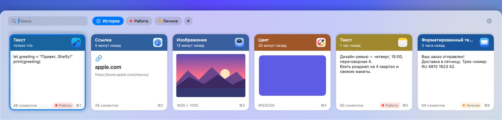

Shelfy запоминает всё, что вы копируете: тексты, ссылки, картинки, файлы и цвета. Нажмите ⌘⇧V и вставьте что угодно из истории.
Загрузить в Mac App Store
⌘⇧V открывает шторку внизу экрана. Выберите карточку стрелками и нажмите Return — Shelfy вставит её.
Отмечайте важное тегами и переключайтесь между ними клавишей Tab. Элементы с тегом хранятся бессрочно.
Просто начните печатать — Shelfy найдёт нужное в истории.
История хранится только на вашем Mac. Никаких аккаунтов, облака и сети. Пароли из менеджеров паролей не сохраняются.
Храните историю день, месяц или бессрочно — и очищайте, когда захотите.
Мягкий звук при копировании, иконки приложений-источников, вставка без форматирования через Shift+Return. На русском, английском и испанском.